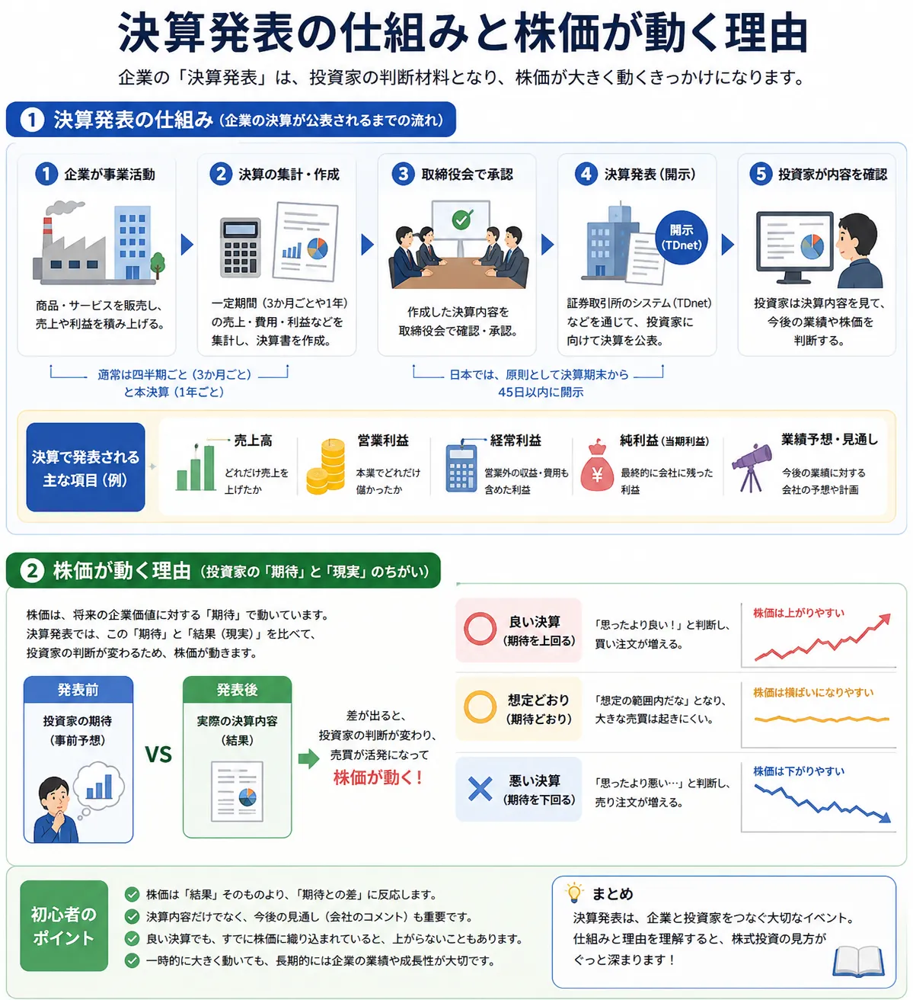

話題・トレンド
決算発表とは？なぜ株価が大きく動くの？初心者向けに解説
決算発表は、企業の売上高や利益、今後の見通しが公表される重要なイベントです。発表内容によっては株価が大きく上昇・下落しますが、好決算だから必ず上がるとは限りません。決算の数字だけでなく、市場の期待や将来の業績予想との違いを見ることが大切です。
Overview
決算発表の仕組みと株価の関係を最初に整理

企業が決算を集計
売上高や費用、利益、資産・負債などを一定期間ごとに整理します。
決算内容を発表
決算短信や説明資料などを通じて、業績や今後の見通しを公表します。
市場予想と比較
投資家は前年実績や会社予想、市場の期待と発表内容を比べます。
株価に反映
期待との差や将来見通しに応じて、買い・売りが増えることがあります。
決算発表は、過去の成績を確認するだけのイベントではありません。株式市場では、発表済みの数字に加えて、企業が今後どの程度成長できるかという将来への期待も評価されます。
Definition
決算発表とは？
決算発表とは、企業が一定期間の経営成績や財務状況をまとめて公表することです。株式市場では、企業が公表する決算短信や決算説明資料などを通じて、売上高、利益、業績予想、事業の進み具合などが確認されます。
決算発表の意味
企業が一定期間にどれだけ商品やサービスを販売し、どれだけ費用がかかり、最終的にどれだけ利益が残ったのかを公表します。
企業が発表する理由
株主や投資家、金融機関などへ経営状態を伝え、企業の状況を判断するために必要な情報を提供する役割があります。
投資家が注目する理由
企業の成長性や収益力、業績予想の変化を確認できるためです。発表内容は将来の株価を考える重要な材料になります。
上場企業は、事業年度や中間期、四半期の決算内容が定まった場合、証券取引所のルールに基づいて決算短信などを開示します。なお、企業によって決算期、採用する会計基準、発表資料の内容は異なります。
Quarterly and Full-Year Results
四半期決算と本決算の違い
四半期とは、1年間をおおむね3か月ごとの4期間に分けたものです。企業は四半期ごとに業績の進み具合を公表し、事業年度の最後には1年間をまとめた本決算を発表します。
| 区分 | 対象期間の例 | 主な確認内容 | 3月期企業の発表時期の目安 |
|---|---|---|---|
| 第1四半期（1Q） | 事業年度開始から最初の3か月 | 新年度の立ち上がり、売上・利益の進み具合 | 7月下旬～8月ごろ |
| 第2四半期（2Q・中間期） | 事業年度開始から6か月 | 上半期の業績、通期予想の達成可能性 | 10月下旬～11月ごろ |
| 第3四半期（3Q） | 事業年度開始から9か月 | 通期業績の着地へ向けた進捗状況 | 1月下旬～2月ごろ |
| 本決算（通期決算） | 事業年度全体の12か月 | 1年間の実績と次年度の業績予想 | 4月下旬～5月ごろ |
※ スマートフォンでは横にスクロールできます。
四半期決算
年度途中の進捗を確認する決算
第1四半期、第2四半期、第3四半期では、年度途中の売上高や利益の進み具合を確認します。前年同期との比較や、通期予想に対する進捗率が注目されます。
本決算
1年間の業績をまとめる決算
本決算では1年間の業績が確定します。前年度の実績に加えて、次の事業年度に関する売上高や利益の予想が発表されることもあり、株価が大きく動く場合があります。
8月の決算シーズン：日本では3月を本決算とする企業が多いため、7月下旬から8月上旬ごろには第1四半期決算の発表が集中しやすくなります。ただし、決算期や発表日は企業ごとに異なるため、公式の発表予定を確認することが大切です。
Financial Terms
決算でよく見る用語
決算ニュースでは「売上高」「営業利益」「経常利益」「純利益」という言葉がよく使われます。それぞれが示す内容は異なるため、利益という言葉だけでまとめずに確認することが大切です。
売上高
商品やサービスを販売して得た金額の合計です。企業の事業規模や需要の強さを確認する基本的な数字で、一般的には費用を差し引く前の金額を示します。
営業利益
売上高から、商品の仕入れや製造費、人件費、広告費など、本業に関係する費用を差し引いた利益です。企業の本業がどれだけ稼いでいるかを確認するときに使われます。
経常利益
営業利益に、受取利息や為替差損益など、本業以外で継続的に発生する収益・費用を加減した利益です。企業全体の通常の事業活動による利益を確認する目安になります。
純利益
経常利益から、一時的な特別利益・特別損失や税金などを反映した後に残る利益です。決算短信では「親会社株主に帰属する当期純利益」などの名称で表示される場合があります。
| 項目 | 簡単な意味 | 初心者が見るポイント |
|---|---|---|
| 売上高 | 商品・サービスを販売した金額 | 事業規模や需要が拡大しているか |
| 営業利益 | 本業から得た利益 | 本業の採算性が改善しているか |
| 経常利益 | 通常の企業活動全体から得た利益 | 営業外の収益・費用を含めて利益が安定しているか |
| 純利益 | 税金などを反映した最終的な利益 | 一時的な特別利益・特別損失が含まれていないか |
※ スマートフォンでは横にスクロールできます。
売上高が増えていても、原材料費や人件費などが大きく増えれば利益が減ることがあります。反対に、売上高の伸びが小さくても、コスト削減や採算改善によって利益が増える場合があります。
Market Expectations
好決算でも株価が下がるのはなぜ？
決算の数字が前年より良くても、株価が下がることがあります。株式市場では、発表された数字だけでなく、発表前に投資家がどの程度の業績を期待していたかが重要になるためです。
市場の期待との違い
良い決算でも期待以下なら売られることがある
売上高や利益が増えていても、市場がさらに大きな成長を予想していた場合は「期待ほどではなかった」と判断され、株価が下がることがあります。
将来の業績予想
過去の実績より今後の見通しが重視される
発表された四半期の実績が良くても、今後の需要減少やコスト増加が予想される場合、将来の利益が伸びにくいと判断されることがあります。
利益確定売り
決算前に上昇していた株が売られる
好決算への期待で決算発表前から株価が上がっていた場合、発表後に投資家が利益を確定するため売却し、株価が下がることがあります。
材料出尽くし
期待されていた材料が実現して売られる
材料出尽くしとは、期待されていた好材料が実際に発表されたことで、新たに買う理由が弱まり、売りが増える状態を指します。
好決算＝株価上昇とは限りません。株価は、現在の業績、将来の見通し、市場予想、発表前までの値動き、投資家心理など複数の要因を反映して動きます。
| 決算内容 | 市場の事前期待 | 株価の反応例 |
|---|---|---|
| 業績が良い | 期待を大きく上回る | 買いが増えて上昇する場合がある |
| 業績が良い | さらに高い業績が期待されていた | 期待以下として下落する場合がある |
| 業績が悪い | さらに悪い結果が予想されていた | 悪材料出尽くしで上昇する場合がある |
| 業績が悪い | 市場予想も下回る | 業績不安から下落する場合がある |
※ 実際の株価は市場全体や他のニュースにも影響されます。
Earnings Forecast Revision
上方修正・下方修正とは？
企業は本決算や四半期決算などで、今後の売上高や利益の予想を公表することがあります。その後、事業環境や受注状況、為替、コストなどが変化した場合、以前公表した業績予想を見直すことがあります。
上方修正
業績予想を高い数値へ見直す
売上高や利益が従来予想を上回る見込みになったとき、予想を引き上げることを上方修正と呼びます。需要増加、販売好調、コスト改善などが理由になる場合があります。
下方修正
業績予想を低い数値へ見直す
売上高や利益が従来予想を下回る見込みになったとき、予想を引き下げることを下方修正と呼びます。需要減少、原材料費の上昇、販売不振などが理由になる場合があります。
株価への影響
一般的には上方修正が好材料、下方修正が悪材料と受け止められやすい傾向があります。ただし、修正幅や理由、次の事業年度への影響などによって評価は変わります。
必ず株価が動くわけではない
上方修正がすでに予想されていた場合、発表後に株価が上がらないことがあります。反対に、下方修正でも市場が想定していたほど悪くなければ、株価が上昇する場合があります。
通期予想が据え置かれる場合もある
四半期の利益が大きく増えても、季節性や今後のコスト増加を考慮して通期予想を変更しない企業もあります。四半期だけでなく、修正理由や経営者の説明を確認することが大切です。
Beginner Checklist
初心者が決算を見るポイント
決算資料には多くの数字が掲載されていますが、最初からすべてを理解する必要はありません。基本的な項目を順番に確認すると、企業の変化をつかみやすくなります。
-
利益だけで判断しない
純利益だけでなく、売上高や営業利益も確認します。特別利益によって純利益だけが増えている場合など、本業の状況と最終利益が異なることがあります。
-
前年同期と比較する
前年の同じ時期と比べて、売上高や利益が増えているかを確認します。ただし、一時的な要因や事業売却などが含まれていないかにも注意が必要です。
-
通期予想に対する進捗を確認する
四半期までの利益が、企業の通期予想に対してどの程度進んでいるかを確認します。業種によって売上が集中する季節が異なるため、進捗率だけで単純に判断しないことも重要です。
-
今後の見通しを確認する
企業が今後の需要、受注、コスト、為替などをどのように説明しているかを確認します。株価は過去の実績よりも、将来の見通しに強く反応することがあります。
-
業績予想の変更を確認する
上方修正や下方修正が行われたか、通期予想が据え置かれたかを確認します。数値だけでなく、修正された理由も読みましょう。
-
一度の決算だけで投資判断しない
一時的な費用や特需によって業績が大きく変化する場合があります。複数回の決算を継続して確認し、売上や利益の傾向を見ることが企業理解につながります。
- 売上高と営業利益が前年同期より増えているか
- 利益率が改善しているか、悪化しているか
- 会社の通期予想が変更されたか
- 決算説明資料で今後の見通しがどう説明されているか
- 決算発表前に株価が大きく上昇していなかったか
- 一時的な利益・損失が含まれていないか
Earnings Season
決算シーズンに注意したいこと
多くの企業が短期間に決算を発表する時期は「決算シーズン」と呼ばれます。日本では、3月期企業の本決算が集中する4月下旬から5月、第1四半期決算が集中しやすい7月下旬から8月上旬などが注目されます。
発表日を確認する
決算発表日は企業ごとに異なります。保有銘柄や関心のある企業については、企業の公式サイトや証券取引所の情報で確認します。
発表時間にも注意する
取引時間中に発表する企業もあれば、取引終了後に発表する企業もあります。発表直後は売買が集中し、値動きが大きくなる場合があります。
急な値動きを追いかけない
決算直後は内容の解釈が分かれ、株価が上下に大きく動くことがあります。見出しだけを見て慌てて売買しないことが大切です。
決算発表の直後には、通常よりも売買が増え、希望する価格で取引しにくくなる場合があります。特に値動きの大きい銘柄では、自分が負える損失の範囲や投資金額を事前に考えておくことが重要です。
Related Articles
決算発表と一緒に確認したい基礎知識
決算と株価の関係を理解するには、株価が動く仕組みや株価指数、業種、長期投資などの基礎も一緒に確認すると理解が深まります。
FAQ
決算発表に関するよくある質問
-
決算発表とは何ですか？
決算発表とは、企業が一定期間の売上高や利益、財務状況、今後の業績予想などを公表することです。投資家が企業の経営状態を確認するための重要な情報となります。 -
四半期決算とは？
四半期決算とは、1年間をおおむね3か月ごとの4期間に分けて業績を公表する決算です。第1四半期、第2四半期、第3四半期を経て、事業年度全体をまとめる本決算が発表されます。 -
好決算なのに株価が下がるのはなぜ？
発表された業績が良くても、市場が事前に期待していた水準に届かなかった場合や、今後の業績予想が弱い場合、利益確定売りや材料出尽くしの売りが出た場合には株価が下がることがあります。 -
上方修正とは何ですか？
上方修正とは、企業が以前公表した売上高や利益などの業績予想を、より高い数値へ見直すことです。ただし、修正内容がすでに株価へ織り込まれている場合などは、必ず株価が上がるとは限りません。 -
初心者はどこを見ればよいですか？
売上高と各利益が前年同期と比べてどう変化したか、会社の業績予想に対して順調に進んでいるか、今後の見通しが変更されたかを確認すると整理しやすくなります。一度の決算だけで判断しないことも大切です。
Summary
まとめ｜決算発表は企業を継続して理解するための重要情報
- 決算発表は、企業の売上高や利益、財務状況、今後の見通しを確認するための情報です。
- 四半期決算では年度途中の進捗、本決算では1年間の実績と次年度の予想が注目されます。
- 売上高、営業利益、経常利益、純利益はそれぞれ示す内容が異なります。
- 株価は現在の業績だけでなく、市場の事前期待や将来の業績予想も反映して動きます。
- 好決算でも期待以下や材料出尽くしによって株価が下がることがあります。
- 一度の決算だけで判断せず、複数回の決算を継続して確認すると企業への理解が深まります。
Next Step
株価が動く基本と長期投資の考え方も確認する
決算発表を理解した後は、株価が需要と供給で動く仕組みや、一度のニュースだけに振り回されにくい長期投資の考え方も確認してみましょう。
ご利用にあたっての注意事項
本記事は一般的な情報提供と金融教育を目的としており、特定の企業・銘柄・証券会社の推奨や、投資の勧誘を目的としたものではありません。決算資料の内容、会計基準、業績予想、発表時期などは企業によって異なります。株式などの金融商品は元本保証がなく、相場変動、業績悪化、信用状況、為替変動、制度変更などにより損失が生じる場合があります。取引を行う際は、企業の適時開示、決算短信、有価証券報告書、契約締結前交付書面などの最新情報を確認し、ご自身の判断と責任で行ってください。